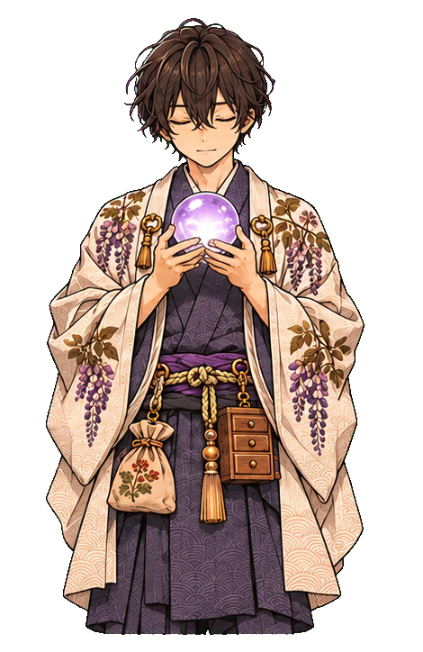
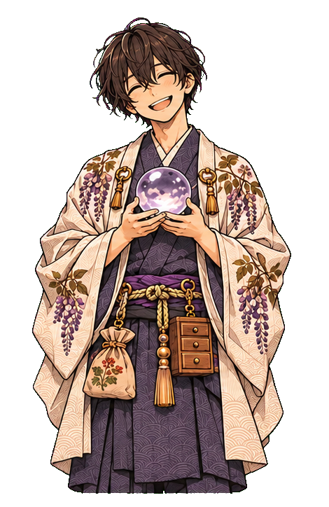

▼
体を当てる占い
夜の漢方堂
体の悩みを、ひとつ、心に思いうかべてください。
占い師が、水晶をのぞいて、それを言い当てにいきます。5分ほどです。
体質を楽しく知るための試作品で、診断ではありません。病気の判断や治療には使えません。登場人物は架空です。
今夜の見立て
0%的中
あなたの体は
ひとつだけ
これは体質を楽しく知るための試作品で、診断ではありません。体調が気になるときは、医師や薬剤師に相談してください。答えた内容は、どこにも送られず、保存もされません。